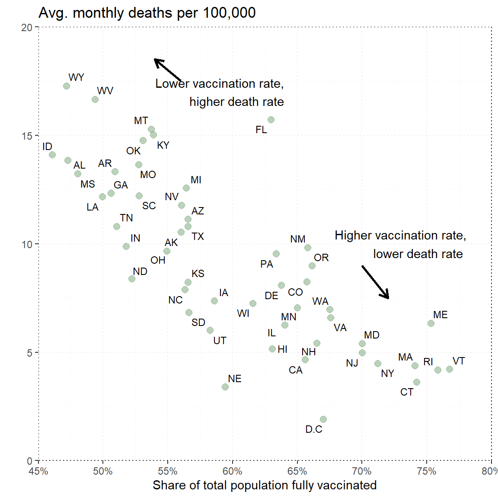
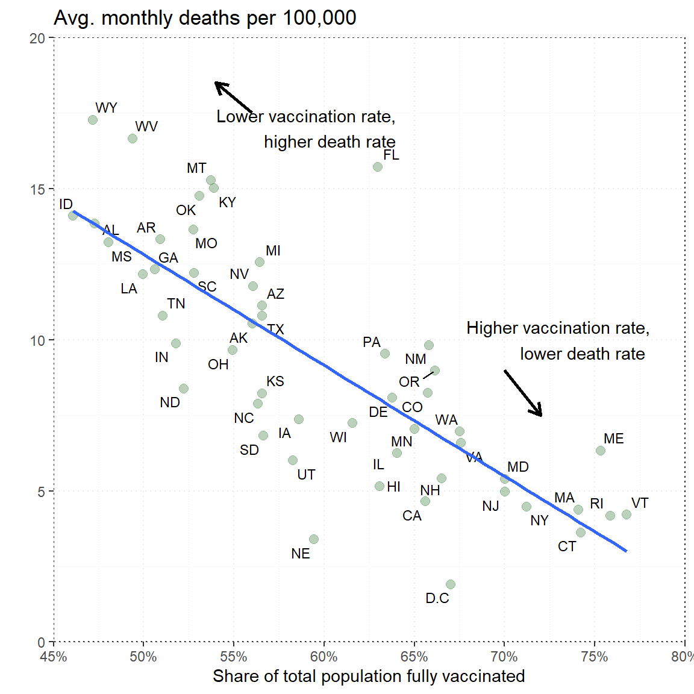

rm (list = ls())
library(jsonlite)
library(tidyverse)
library(ggrepel)
library(scales)Assignment 3
Assignment 3: Reading json data from a web page
On the website of the New York Times: https://www.nytimes.com/interactive/2021/12/28/us/covid-deaths.html?referrer=masthead
We find a figure showing the relationship between vaccination rates and the number of deaths from COVID-19 in the various states in the US.’
Task 1
To access the website you need to register with the NYT, this is free.
Once the web page is loaded in a browser, you can look at the html code by right-clicking on the mouse. Select View Page Source.
Find the JSON link with the JSON data from which the figure reads the data.
Use a package in R that reads JSON ( for instance, jsonlite or rjstat), and download the data from the link.
Then create a ggplot that replicates the figure above.
# Downloading the data from the webpage with the package jsonlite
df <-fromJSON("https://static01.nyt.com/newsgraphics/2021/12/20/us-coronavirus-deaths-2021/ff0adde21623e111d8ce103fedecf7ffc7906264/scatter.json")
# Small data wrangling abbrevating the names
df <- df %>%
mutate(state_name = state.abb[match(name, state.name)])# Creating the plot
plot <-df %>%
ggplot(aes(x=fully_vaccinated_pct_of_pop, y=deaths_per_100k, label=state_name))+
theme_bw()+
# Setting color,size and alpha to the dots
geom_point(color="palegreen4",
size=2.5,
alpha=.4)+
#Setting text to the plotted dots
geom_text_repel(size=3)+
# Changing and removing titles
labs(x="Share of total population fully vaccinated", y="",
title="20 avg. monthly deaths per 100,000")+
scale_x_continuous(labels = scales::percent_format(accuracy = 1))+
# Writing text on plot
annotate("text",
x=0.59,
y=17, label=
"Lower vaccination rate,
higher death rate")+
# Adding arrow
geom_segment(aes(x=0.56, y=15, xend=0.55, yend=16.5),
arrow = arrow(length=unit(.3, 'cm')), lwd=1)+
annotate("text",
x=0.73,
y=10, label=
"Higher vaccination rate,
lower death rate")+
geom_segment(aes(x=0.7, y=8.5, xend=0.71, yend=7),
arrow = arrow(length=unit(.3, 'cm')), lwd=1)
plot
Task 2
There is a clear negative correlation between the number of deaths per 100 000 (y-axis) and the proportion of the population vaccinated (x-axis).
Use R’s lm() function. Set the variable on the y-axis and x-axis, and specify the data set.
LM(<Y variable name> ~ <X variable>, data=<dataset name>)
After “running” the code, how do you interpret the two values on the customized line?
Add the custom line to ggplot using + geom_smooth(method = lm).
# Using the lm function to make a linear model to look for causation of deaths
lm( deaths_per_100k ~ fully_vaccinated_pct_of_pop, df)
Call:
lm(formula = deaths_per_100k ~ fully_vaccinated_pct_of_pop, data = df)
Coefficients:
(Intercept) fully_vaccinated_pct_of_pop
31.15 -36.66 # Plotting the line
plot + geom_smooth(method = lm, se=FALSE,fullrange=TRUE)